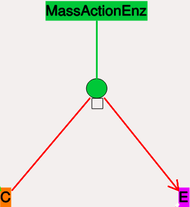
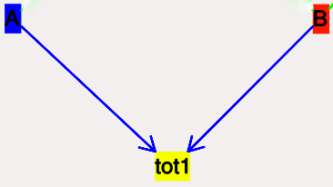

Kinetikit 12: Interface for chemical kinetic models in MOOSEGUI.
Table of Contents
1 Introduction
Kinetikit 12 is a graphical interface for doing chemical kinetic modeling in MOOSE. It is derived in part from Kinetikit, which was the graphical interface used in GENESIS for similar models. Kinetikit, also known as kkit, was at version 11 with GENESIS. Here we start with Kinetikit 12.
1.1 What are chemical kinetic models?
Much of neuronal computation occurs through chemical signaling. For example, many forms of synaptic plasticity begin with calcium influx into the synapse, followed by calcium binding to calmodulin, and then calmodulin activation of numerous enzymes. These events can be represented in chemical terms:
4 Ca2+ + CaM <====> Ca4.CaM
Such chemical equations can be modeled through standard Ordinary Differential Equations, if we ignore space:
d[Ca]/dt = -4Kf * [Ca]4 * [CaM] + 4Kb * [Ca4.CaM]
d[CaM]/dt = -Kf * [Ca]4 * [CaM] + Kb * [Ca4.CaM]
d[Ca4.CaM]/dt = Kf * [Ca]4 * [CaM] - Kb * [Ca4.CaM]
MOOSE models these chemical systems. This help document describes how to do such modelling using the graphical interface, Kinetikit 2.
1.2 Levels of model
At present Kinetikit handles compartmental models but does not compute diffusion within the compartments, though MOOSE itself can do this at the script level. Kkit12 will do deterministic as well as stochastic chemical calculations.
1.3 Numerical methods
- Deterministic
- Adaptive timestep 5th order Runge-Kutta-Fehlberg from the GSL (GNU Scientific Library).
- Stochastic
- Optimized Gillespie Stochastic Systems Algorithm, custom implementation.
2 Using Kinetikit 12
2.1 Overview
- Load models using File->Load. Chemical schematic appears in Model layout tab.
- Run models using Run button.
- View plots by clicking on Plot Window tab.
- View parameters in Model layout tab by clicking on icons, and looking at entries in Properties table to the right.
- Edit parameters by changing their values in the Properties table.
- Plot variables belonging to an object by clicking on its icon, and then clicking Add Field in the Plot Configuration panel.
- Manipulate and save plots using the icons at the bottom of the Plot Window.
- Select numerical method using options under Solver menu item.
Most of these operations are detailed in other sections, and are shared with other aspects of the MOOSE simulation interface. Here we focus on the Kinetikit-specific items.
2.2 Model layout and icons
When you are in the Kkit layout tab you will see a collection of icons, arrows, and grey boxes surrounding these. This is a schematic of the reaction scheme being modeled. You can view and change parameters, and change the layout of the model. In the next MOOSE release you will also be able to add and remove molecules and reactions.

2.2.1 Compartment
The compartment in moose is usually a contiguous domain in which a certain set of chemical reactions and molecular species occur. The definition is very closely related to that of a cell-biological compartment. Examples include the extracellular space, the cell membrane, the cytosol, and the nucleus. Compartments can be nested, but of course you cannot put a bigger compartment into a smaller one.
- Icon: Grey boundary around a set of reactions.
- Moving Compartments: Click and drag on the boundary.
- Resizing Compartment boundary: Happens automatically when contents are repositioned, so that the boundary just contains contents.
- Compartment editable parameters:
- Name: The name of the compartment.
- Size: This is the volume, surface area or length of the compartment, depending on its type.
- Compartment fixed parameters:
- numDimensions: This specifies whether the compartment is a volume, a 2-D surface, or if it is just being represented as a length.
2.2.2 Pool
This is the set of molecules of a given species within a compartment. Different chemical states of the same molecule are in different pools.
- Icon: Colored rectangle with pool name in it.
- Moving pools: Click and drag.
- Pool editable parameters:
- Name: Name of the pool
- n: Number of molecules in the pool
- nInit: Initial number of molecules in the pool. n gets set to this value when the Reinit operation is done.
- conc: Concentration of the molecules in the pool.
conc = n * unit_scale_factor / (NA * vol)
- concInit: Initial concentration of the molecules in the
pool.
concInit = nInit * unit_scale_factor / (NA * vol)
conc is set to this value when the Reinit operation is done.
- Pool fixed parameters
- size: Derived from the compartment that holds the pool. Specifies volume, surface area or length of the holding compartment.
2.2.3 Buffered pools
Some pools are set to a fixed n, that is number of molecules, and therefore a fixed concentration, throughout a simulation. These are buffered pools.
- Icon: Colored rectangle with pool name in it.
- Moving Buffered pools: Click and drag.
- Buffered Pool editable parameters
- Name: Name of the pool
- nInit: Fixed number of molecules in the pool. n gets set to this value throughout the run.
- concInit: Fixed concentration of the molecules in the pool.
concInit = nInit * unit_scale_factor / (NA * vol)
conc is set to this value throughout the run.
- Pool fixed parameters:
- n: Number of molecules in the pool. Derived from nInit.
- conc: Concentration of molecules in the pool. Derived from concInit.
- size: Derived from the compartment that holds the pool. Specifies volume, surface area or length of the holding compartment.
2.2.4 Reaction
These are conversion reactions between sets of pools. They are reversible, but you can set either of the rates to zero to get irreversibility. In the illustration below, D and A are substrates, and B is the product of the reaction. This is indicated by the direction of the green arrow.

- Icon:
 Reversible reaction arrow.
Reversible reaction arrow.
- Moving Reactions: Click and drag.
- Reaction editable parameters:
- Name: Name of reaction
- Kf: Forward rate of reaction, in concentration/time units. This is the normal way to express and manipulate the reaction rate.
- kf: Forward rate of reaction, in number/time units. This is used internally for computations, but is volume-dependent and should not be used to manipulate the reaction rate unless you really know what you are doing.
- Kb: Backward rate of reaction, in concentration/time units. This is the normal way to express and manipulate the reaction rate.
- kb: Backward rate of reaction, in number/time units. This is used internally for computations, but is volume-dependent and should not be used to manipulate the reaction rate unless you really know what you are doing.
- Reaction fixed parameters:
- numProducts: Number of product molecules
- numSubstrates: Number of substrates molecules
2.2.5 Mass-action enzymes
These are enzymes that model the chemical equations
E + S <===> E.S —> E + P
Note that the second reaction is irreversible. Note also that mass-action enzymes include a pool to represent the E.S (enzyme-substrate) complex. In the example below, the enzyme pool is named MassActionEnz, the substrate is C, and the product is E. The direction of the enzyme reaction is indicated by the red arrows.

- Icon: Colored ellipse
atop a small square. The ellipse
represents the enzyme. The small square represents E.S, the
enzyme-substrate complex.
The ellipse icon has the same color as the enzyme pool E. It is connected to the enzyme pool E with a straight line of the same color.
The ellipse icon sits on a continuous, typically curved arrow in red, from the substrate to the product.
A given enzyme pool can have any number of enzyme activities, since the same enzyme might catalyze many reactions.
- Moving Enzymes: Click and drag on the ellipse.
- Enzyme editable parameters
- Name: Name of enzyme.
- Km: Michaelis-Menten value for enzyme, in concentration units.
- kcat: Production rate of enzyme, in 1/time units. Equal to k3, the rate of the second, irreversible reaction.
- k1: Forward rate of the E+S reaction, in number and 1/time units. This is what is used in the internal calculations.
- k2: Backward rate of the E+S reaction, in 1/time units. Used in internal calculations.
- k3: Forward rate of the E.S—> E + P reaction, in 1/time units. Equivalent to kcat. Used in internal calculations.
- ratio: Ratio of k2/k3. Needed to define the internal rates in terms of Km and kcat. I usually use a value of 4.
- Enzyme-substrate-complex editable parameters:
These are identical to those of any other pool.
- Name: Name of the E.S complex. Defaults to <enzymeName>_cplx.
- n: Number of molecules in the pool
- nInit: Initial number of molecules in the complex. n gets set to this value when the Reinit operation is done.
- conc: Concentration of the molecules in the pool.
conc = n * unit_scale_factor / (NA * vol)
- concInit: Initial concentration of the molecules in
the pool.
concInit = nInit * unit_scale_factor / (NA * vol)
conc is set to this value when the Reinit operation is done.
- Enzyme-substrate-complex fixed parameters:
- size: Derived from the compartment that holds the pool. Specifies volume, surface area or length of the holding compartment. Note that the Enzyme-substrate-complex is assumed to be in the same compartment as the enzyme molecule.
2.2.6 Michaelis-Menten Enzymes
These are enzymes that obey the Michaelis-Menten equation
V = Vmax*[S]/(Km+[S]) = kcat*[Etot]*[S]/(Km+[S])
where
- Vmax is the maximum rate of the enzyme
- [Etot] is the total amount of the enzyme
- Km is the Michaelis-Menten constant
- S is the substrate.
Nominally these enzymes model the same chemical equation as the mass-action enzyme:
E + S <===> E.S —> E + P
but they make the assumption that the E.S is in a quasi- steady-state with E and S, and they also ignore sequestration of the enzyme into the complex. So there is no representation of the E.S complex. In the example below, the enzyme pool is named MM_Enz, the substrate is E, and the product is F. The direction of the enzyme reaction is indicated by the red arrows.

- Icon: Colored ellipse. The ellipse represents the enzyme The ellipse icon has the same color as the enzyme E. It is connected to the enzyme pool E with a straight line of the same color. The ellipse icon sits on a continuous, typically curved arrow in red, from the substrate to the product. A given enzyme pool can have any number of enzyme activities, since the same enzyme might catalyze many reactions.
- Moving Enzymes: Click and drag.
- Enzyme editable parameters:
- Name: Name of enzyme.
- Km: Michaelis-Menten value for enzyme, in concentration units.
- kcat: Production rate of enzyme, in 1/time units. Equal to k3, the rate of the second, irreversible reaction.
2.2.7 SumTotal
This is a pool whose concentration is just the sum of the concentrations of pools connected into it. It behaves like a buffer whose concentration varies as the simulation proceeds Note that this violates mass conservation: One can use a SumTotal in a reaction, just like a buffer, but the SumTotal itself will never be depleted. Typically used when we have multiple molecular forms of an enzyme, all with similar activity, and we just want to use a single enzyme activity to represent the whole lot.
- Icon Colored rectangle with pool name. This is tot1 in the
example image below. The input pools A and B
connect to the SumTotal with blue arrows.

- Moving SumTotals: Click and drag.
- SumTotal editable parameters:
- Name: Name of the pool
- SumTotal fixed parameters:
- n: Number of molecules in the pool. Computed as it runs.
- conc: Concentration of molecules in the pool. Computed as it runs.
- size: Derived from the compartment that holds the pool. Specifies volume, surface area or length of the holding compartment.
2.3 Model operations
- Loading models
- File->Load Model -> select from dialog. This operation deletes the previously loaded model. Currently only understands Kkit.g format models.
- Saving models
- File->Save Model->select from dialog. Currently only understands Kkit.g format models.
- Merging models
- File->Merge Model -> select from dialog. This operation tries to merge the new model into the currently loaded model. It does so by recognizing existing molecular pool names, and not duplicating those. Instead, any new reactions involving the existing pools get tied into the existing model. All other new pools and reactions are created as usual. Note that parameters of existing pools get updated to values from the new model.
- Changing numerical methods
- Solver menu item in title bar has
options. Currently supports:
- Runge Kutta: This is the Runge-Kutta-Fehlberg implementation from the GNU Scientific Library (GSL). It is a fifth order variable timestep explicit method. Works well for most reaction systems except if they have very stiff reactions.
- Gillespie: Optimized Gillespie stochastic systems algorithm, custom implementation. This uses variable timesteps internally. Note that it slows down with increasing numbers of molecules in each pool. It also slows down, but not so badly, if the number of reactions goes up.